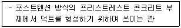
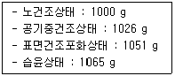
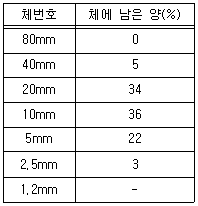
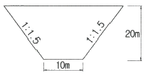
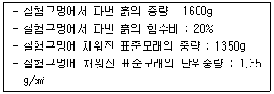

건설재료시험산업기사 (2018-09-15 기출문제)
1과목: 콘크리트공학
1. 콘크리트 다지기에서 내부진동기를 사용할 경우 내부진동기를 하층의 콘크리트 속으로 얼마 정도 찔러 넣어야 하는가?
- 하층에 닿으면 안 된다.
- 0.1m
- 0.2m
- 0.3m
(정답률: 92%)

2. 철근의 부식 정도를 측정하기 위한 비파괴 시험법은?
- 자연전위법
- 반발경도법
- 모르타르바법
- 페놀프탈레인 용액 분무시험법
(정답률: 58%)
3. 서중콘크리트에서 콘크리트를 타설할 때의 콘크리트의 온도는 최대 얼마 이하이어야 하는가?
- 20℃
- 25℃
- 30℃
- 35℃
(정답률: 60%)
4. 경화한 콘크리트의 휨강도시험에서 공시체에 하중을 가하는 속도로 옳은 것은?
- 가장자리 응력도의 증가율이 매초 0.6±0.4MPa이 되도록 한다.
- 가장자리 응력도의 증가율이 매초 0.4±0.06MPa이 되도록 한다.
- 가장자리 응력도의 증가율이 매초 0.6±0.04MPa이 되도록 한다.
- 가장자리 응력도의 증가율이 매초 0.06±0.04MPa이 되도록 한다.
(정답률: 78%)
5. 프리스트레스트 콘크리트 중 프리스트레서의 도입을 콘크리트 구조체 경화 후에 실시하는 것은?
- 프리팩트(Prepacked)
- 레디믹스트(Ready-mixed)
- 포스트텐션(Post-tension)
- 프리텐션(Pre-tension)
(정답률: 58%)
6. 굳지 않은 콘크리트 중의 전 염소이온량은 원칙적으로 몇 kg/m3 이하이어야 하는가?
- 1 kg/m3
- 0.5 kg/m3
- 0.3 kg/m3
- 0.1 kg/m3
(정답률: 77%)
7. 프리플레이스트 콘크리트에서 주입모르타르의 품질검사 항목과 관계없는 것은?
- 압축강도
- 인장강도
- 팽창율
- 블리딩율
(정답률: 40%)
8. 펌프 등을 이용하여 노즐 위치까지 호스 속으로 운반한 콘크리트를 압축공기를 의해 시공면에 뿜어서 만든 콘크리트를 무엇이라고 하는가?
- 수밀모르타르
- 숏크리트
- 주입모르타르
- 프리플레이스트 콘크리트
(정답률: 76%)
9. 콘크리트 시방 배합설계에서 단위골재의 절대용적이 690L 이고 잔골재율이 40%, 잔골재의 표건밀도가 2.60 g/cm3 일 때 단위 잔골재량으로 옳은 것은?
- 689.4 kg
- 703.5 kg
- 717.6 kg
- 732.3 kg
(정답률: 65%)
10. 한중콘크리트에 대한 설명으로 틀린 것은?
- 하루의 평균기온이 10℃ 이하가 예상되는 조건일 때는 한중콘크리트로 시공하여야 한다.
- 재료를 가열할 경우, 물 또는 골재를 가열하는 것으로 하며, 시멘트는 어떠한 경우라도 직접 가열할 수 없다.
- 한중콘크리트는 공기연행 콘크리트를 사용하는 것을 원칙으로 한다.
- 물-결합재비는 원칙적으로 60% 이하로 하여야 한다.
(정답률: 57%)
11. 콘크리트 재료를 계량할 때 허용오차가 가장 큰 것은?
- 물
- 혼화재
- 시멘트
- 혼화제
(정답률: 67%)
12. 굳지 않은 콘크리트의 공기량에 대한 설명으로 옳은 것은?
- 일반적으로 시멘트의 분말도가 높을수록 공기량은 감소하는 경향이 있다.
- 콘크리트의 온도가 낮을수록 공기량은 감소한다.
- 공기량이 1% 증가하면 슬럼프는 약 25mm 감소한다.
- AE 콘크리트 속에 연행된 적당한 공기량은 콘크리트 용적의 1~2% 정도를 표준으로 한다.
(정답률: 41%)
13. 프리스트레스트 콘크리트에 관련된 용어로서 아래의 표에서 설명하는 것은?

- 분체(powder)
- 오토클레이브(autoclave)
- 솟음(camber)
- 쉬스(sheath)
(정답률: 64%)
14. 유동화 콘크리트에 대한 설명으로 틀린 것은?
- 유동화 콘크리트의 슬럼프 증가량은 100mm 이하를 원칙으로 한다.
- 유동화제는 원액으로 사용하고, 미리 정한 소정의 양을 한꺼번에 첨가한다.
- 베이스 콘크리트 및 유동화 콘크리트의 슬럼프 및 공기량 시험은 100m3 마다 1회씩 실시하는 것을 표준으로 한다.
- 유동화 콘크리트의 재유동화는 원칙적으로 할 수 없으나, 부득이한 경우 책임기술자의 승인을 받아 1회에 한하여 재유동화 할 수 있다.
(정답률: 36%)
15. 콘크리트 비비기 시간에 대한 시험을 실시하지 않은 경우 그 최소시간의 표준으로 옳은 것은? (단, 가경식 믹서를 사용할 경우)
- 1분 이상
- 1분 30초 이상
- 2분 이상
- 2분 30초 이상
(정답률: 86%)
16. 압축강도 시험의 기록이 없는 현장에서 콘크리트의 설계기준 압축강도가 20MPa 인 경우 배합강도는?
- 25 MPa
- 27 MPa
- 28.5 MPa
- 30 MPa
(정답률: 77%)
17. 콘크리트를 타설할 때의 슬럼프의 표준값으로 옳지 않은 것은?
- 일반적인 철근콘크리트 : 80~150mm
- 단면이 큰 철근콘크리트 : 60~120mm
- 일반적인 무근콘크리트 : 50~150mm
- 단면이 큰 무근콘크리트 : 30~120mm
(정답률: 68%)
18. 고강도 콘크리트의 배합에 대한 설명으로 틀린 것은?
- 고강도 콘크리트는 공기연행제를 사용하는 것을 원칙으로 한다.
- 단위시멘트량은 소요의 워커빌리티 및 강도를 얻을 수 있는 범위 내에서 가능한 한 적게 되도록 시험에 의해 정하여야 한다.
- 단위수량은 소요의 워커빌리티를 얻을 수 있는 범위 내에서 가능한 적게 하여야 한다.
- 슬럼프는 작업이 가능한 범위 내에서 되도록 적게 하여야 한다.
(정답률: 72%)
19. 콘크리트의 습윤양생에 대한 설명으로 틀린 것은?
- 일평균 기온이 15℃ 이상이고 보통포틀랜드 시멘트를 사용한 콘크리트의 습윤양생 기간의 표준은 5일이다.
- 콘크리트는 타설한 후 습윤상태로 노출면이 마르지 않도록 하여야 하며, 수분의 증발에 따라 살수를 하여 습윤상태로 보호하여야 한다.
- 콘크리트는 타설한 후 거푸집판이 건조될 우려가 있는 경우라도 직접 살수하여서는 안 된다.
- 막양생을 할 경우 막양생제는 콘크리트 표면의 물빛(水光)이 없어진 직후에 얼룩이 생기지 않도록 살포하여야 한다.
(정답률: 73%)
20. 화재에 의한 콘크리트 구조물에 열화현상에 대한 설명으로 틀린 것은?
- 콘크리트의 가열에 의한 정탄성계수의 감소에 의해 바닥슬래브의 처짐이 증대한다.
- 탈수나 단면 내의 열응력에 의해 균열, 피복, 콘크리트의 들뜸, 탈락이 생긴다.
- 콘크리트는 약 250℃에서 중성화되기 시작한다.
- 철근과 콘크리트 사이에 부착강도가 저하한다.
(정답률: 73%)
2과목: 건설재료 및 시험
21. 목재를 건조시키는 방법 중 그 성격이 다른 것은?
- 침수법
- 끓임법
- 증기건조법
- 전기건조법
(정답률: 62%)
22. 스트레이트 아스팔트와 브라운 아스팔트의 성질에 대한 설명으로 틀린 것은?
- 스트레이트 아스팔트는 브라운 아스팔트 보다 점도가 낮다.
- 스트레이트 아스팔트는 브라운 아스팔트 보다 연화점이 높다.
- 스트레이트 아스팔트는 브라운 아스팔트 보다 신도가 크다.
- 스트레이트 아스팔트는 브라운 아스팔트 보다 감온성이 크다.
(정답률: 45%)
23. 석재에 대한 설명으로 틀린 것은?
- 안산암은 강도 및 내구성이 비교적 크다.
- 안산암은 퇴적암에 속한다.
- 화강암은 조직이 균일하고 내구성 및 강도가 크다.
- 안산암은 절리가 있기 때문에 큰 재료를 얻기 어렵다.
(정답률: 59%)
24. 뇌관을 점화시키는 도화선은 주로 무엇을 심지약으로 하는가?
- 칼릿
- 흑색화약
- 무연화약
- 니트로글리세린
(정답률: 56%)
25. 콘크리트용 골재에 대한 설명 중 틀린 것은?
- 하전골재는 단단하고 내구적이며 입형이 양호한 것이 많다.
- 육상골재는 미립분의 함유량이 많고 유기불순물이 혼입되는 경우가 많다.
- 바다골재 중의 염분은 콘크리트의 경화를 지연시키지만 장기강도 증진을 촉진한다.
- 부순골재를 사용하면 강자갈을 사용할 때보다 단위수량 및 잔골재율을 증가시킬 필요가 있다.
(정답률: 70%)
26. 시멘트의 저장에 대한 설명 중 틀린 것은?
- 시멘트는 품종별로 구분하여 저장하여야 한다.
- 포대시멘트를 저장하는 경우에는 시멘트의 방습에 주의하고 시멘트 창고는 되도록 공기의 유통이 없어야 한다.
- 포대시멘트를 저장하는 목재 창고의 바닥은 지상으로부터 30cm 이상 높은 것이 좋다.
- 습기를 흡수하여 덩어리가 된 시멘트는 원래시멘트 입자크기로 분쇄하여 사용하여야 한다.
(정답률: 73%)
27. 암석의 구조 중 절리의 종류가 아닌 것은?
- 구성절리
- 봉상절리
- 주상절리
- 판상절리
(정답률: 56%)
28. KS F 2564(콘크리트용 강섬유)에는 강섬유를 소재에 의한 제작방법에 따라 4가지로 분류하고 있다. 다음 중 콘크리트 보강용으로 사용되는 강섬유의 종류가 아닌 것은?
- 와이어 섬유
- 이형 절단 시트 섬유
- 아라미드 섬유
- 용융 추출 섬유
(정답률: 67%)
29. 하중이 반복 작용할 때 재료가 정적강도보다 낮은 강도에서 파괴되는 현상을 무엇이라고 하는가?
- 피로파괴
- 균형파괴
- 충격강도
- 크리프
(정답률: 83%)
30. 아스팔트의 신도시험에 대한 설명으로 틀린 것은?
- 아스팔트의 연성(延性)을 조사하기 위하여 실시한다.
- 별도 규정이 없는 한 온도는 (15±0.5)℃, 속도는 (10±0.25)cm/min 으로 시험한다.
- 저온에서 시험할 때는 온도는 4℃, 속도는 1cm/min을 적용한다.
- 신도는 시료의 양 끝을 규정 온도 및 속도로 잡아당겼을 때 시료가 끊어질 때까지 늘어난 길이를 말하고 cm로 나타낸다.
(정답률: 54%)
31. 잔골재의 함수상태에 따라 계량한 값이 다음과 같을 때 이 골재의 표면수율은?

- 0.89%
- 1.21%
- 1.33%
- 1.50%
(정답률: 58%)
32. 시멘트의 응결에 영향을 미치는 요소에 대한 설명으로 틀린 것은?
- 분말도가 크면 응결은 빨라진다.
- 온도가 높을수록 응결을 빨라진다.
- 풍화된 시멘트는 일반적으로 응결이 지연된다.
- 습도가 높을수록 응결을 빨라진다.
(정답률: 63%)
33. 굵은 골재의 최대치수에 관한 설명으로 틀린 것은?
- 굵은 골재의 최대치수가 클수록 소요의 반죽질기를 얻기 위한 단위수량은 감소한다.
- 철근콘크리트의 경우 굵은 골재의 최대치수는 부재의 최소치수나 철근의 수평간격을 고려한다.
- 굵은 골재의 최대치수가 클수록 비빔 및 취급이 곤란하고 재료분리가 일어나기 쉽다.
- 굵은 골재의 최대 치수는 중량으로 90% 이상을 통과시키는 체 중에서 최대치수의 체눈을 공칭치수로 나타낸 것이다.
(정답률: 39%)
34. 굵은 골재의 체가름 시험한 결과가 표와 같을 때 조립률은?

- 1.64
- 3.14
- 5.16
- 7.16
(정답률: 43%)
35. 강교, 철골구조의 부재이음 또는 가조립에 주로 사용되는 금속재료로 마찰접합에 사용되는 것은?
- 리벳
- PS강연선
- 고장력볼트
- 와이어로프
(정답률: 53%)
36. 시멘트의 수화열과 관련된 설명으로 틀린 것은?
- 시멘트와 물이 혼합하면 수화열이 발생한다.
- 수화열은 시멘트가 응결, 경화하는 과정에서 발생한다.
- 단면이 큰 경우 내외의 온도차에 의해 균열발생의 원인이 된다.
- 수화열의 온도상승 효과는 서중콘크리트 공사에 긍정적인 요소로 작용한다.
(정답률: 76%)
37. 고로 슬래그 미분말에 대한 설명 중 틀린 것은?
- 용광로에서 배출되는 슬래그를 급랭하여 입상화 한 후 미분쇄한 것이다.
- 철근부식이 억제된다.
- 알칼리 골재반응을 촉진시킨다.
- 콘크리트의 수화열 발생 속도를 감소시킨다.
(정답률: 58%)
38. 고무혼입 아스팔트에 대한 설명으로 틀린 것은?
- 감온성이 작다.
- 응집력이 크다.
- 탄성이 작다.
- 충격저항성이 크다.
(정답률: 55%)
39. 사용량이 비교적 많아 콘크리트의 배합 설계에 고려하여야 하는 혼화재료는?
- 고로 슬래그 미분말
- 감수제
- 촉진제
- 발포제
(정답률: 73%)
40. 콘크리트용 혼화재료의 사용 목적으로 틀린 것은?
- 내구성, 수밀성 및 화학적 저항성의 감소
- 응결 및 경화의 지연 또는 촉진
- 작업의 용이 및 양질 콘크리트의 제조
- 시멘트 사용량 절약 및 재료 분리의 방지
(정답률: 45%)
3과목: 건설시공학
41. 공기케이슨(pneumatic caisson) 공법에 관한 설명으로 옳지 않은 것은?
- 장애물을 제거하기 쉽다.
- 토층 확인이 가능하고 지지력 시험도 가능하다.
- 케이슨 병에 걸리기 쉽다.
- 소규모 공사에 경제적이다.
(정답률: 69%)
42. 다목적 댐과 같이 상류 측에 콘크리트로 차수벽을 만들고 중앙 및 하류 측은 석괴로 쌓아 올리는 댐의 형식은?
- 표면 차수벽형
- 내부 차수벽형
- 코어형
- 록필형
(정답률: 58%)
43. 다음 그림과 같은 단면의 수로를 굴착할 때 길이가 10m 라면 절취토량은?

- 46667 m3
- 8000 m3
- 10000 m3
- 12000 m3
(정답률: 54%)
44. 아머의 배열방식 중 집수지거를 향하여 지형의 경사가 완만하고, 같은 습윤상태이 곳에 적합하며, 1개의 간선집수지 또는 집수지거로 가능한 한 많은 흡수거를 합류하도록 배열하는 방식은?
- 집단식 배열 방식
- 차단식 배열 방식
- 어골식 배열 방식
- 빗싯 배열 방식
(정답률: 61%)
45. 옹벽 저판과 지반사이의 마찰력이나 부착력에 의한 저항만으로 활동에 대한 안정이 확보되지 않을 때 이에 대한 대책으로 틀린 것은?
- 저판 바닥판에 돌출부를 설치한다.
- 저면 기초 하부에 주철근을 더 배근한다.
- 기초에 말뚝을 설치하여 활동에 대한 저항력을 증대 시킨다.
- 돌출부를 단단한 지반이나 연암 이상의 암반에 시공한다.
(정답률: 43%)
46. 샌드드레인 공법은 시공정밀도를 확인하기 어려울 뿐만 아니라 배수재 절단 등의 문제가 있어 투수성이 큰 망상의 포대에 모래를 채워 시공하므로 샌드드레인의 이러한 결점을 보완할 수 있는 공법은?
- 웰포인트(well Point) 공법
- 팩드레인(Pack Drain) 공법
- 심지배수(Wick Drain) 공법
- 페이퍼드레인(Paper Drain) 공법
(정답률: 34%)
47. 준설과 매립을 동시에 할 수 있고 토량이 많고 연한 토질에 적합한 준설선은?
- pump dredger
- differ dredger
- grab dredger
- bucket dredger
(정답률: 59%)
48. TBM(Tunnel Boring Machine) 공법의 특징에 관한 설명 중 옳지 않은 것은?
- 터널 내의 공기 오염도가 적다.
- 라이닝의 두께를 얇게 할 수 있다.
- 본바닥을 이완시키지 않으므로 동바리공이 간단하다.
- 본바닥의 변화에 대하여 적응하기가 쉽다.
(정답률: 58%)
49. 다음 중 깊은 다짐, 점성토 다짐 및 고함수비 지반 다짐에 사용하는 탬핑(tamping) 로울러가 아닌 것은?
- sheeps foot roller
- grid roller
- taper foot roller
- tandem roller
(정답률: 57%)
50. 다진 후의 토량이 240m3의 성토공사를 하는데 필요한 본바닥 토량은 얼마인가? (단, L=1.10, C=0.8)
- 264 m3
- 275 m3
- 300 m3
- 330 m3
(정답률: 38%)
51. 다음 토공 용어에 대한 설명으로 틀린 것은?
- 수저의 토사를 파내서 바닥을 깊게 하는 일을 준설이라고 한다.
- 절취나 성토를 할 때의 표준 단면형을 토종정규라고 한다.
- 자연상태에 있어서 급경사면이 점차 붕괴하여 안정된 사면을 형성할 때의 바닥면과 이루는 각을 안식각이라고 한다.
- 절토와 성토가 균형을 이루지 못하여 절토 작업에서 남아 버리는 흙을 유용토라고 한다.
(정답률: 50%)
52. 콘크리트 압축강도 시험에서 10개의 공시체를 측정하여 평균 30 MPa, 표준편차 1.5 MPa 일 때의 변동계수는?
- 5%
- 8%
- 10%
- 15%
(정답률: 60%)
53. 폭우 시 옹백배면에 배수시설이 취약하면 옹벽저면을 통하여 침투수의 수위가 올라간다. 이 침투수가 옹벽의 안정에 미치는 영향 중 옳지 않은 것은?
- 수평저항력의 증가
- 활동면에서의 간극수압 증가
- 옹벽바닥면에서의 양압력 증가
- 포화에 따른 뒷채움 흙무게의 증가
(정답률: 44%)
54. 시멘트 콘크리트 포장에서 콘크리트의 설계기준 강도로 사용하는 것은?
- 조기강도
- 인장강도
- 휨강도
- 전단강도
(정답률: 45%)
55. 교량을 크게 상부구조와 하부구조로 나눌 경우 다음 중 교량의 상부구조에 해당하지 않는 것은?
- 주형
- 브레이싱
- 교각
- 받침부
(정답률: 59%)
56. 다음 발파법 중에서 심빼기 발파(center cut blasting)가 아닌 것은?
- V 컷(v cut)
- 벤치 컷(bench cut)
- 번 컷(burn cut)
- 노 컷(no-cut)
(정답률: 51%)
57. 거푸집과 벽체 마감공사를 위한 비계틀을 일체로 조립하여 콘크리트를 타설·양생 완료 후 설비를 상부로 인양하면서 반복적으로 작업을 수행하는 공법으로 거푸집을 80~100회 정도 전용이 가능하며 높이가 높고 단면의 변화가 없는 고교각 등에 적용되는 거푸집의 종류는?
- 클라이밍 폼(Climbing form)
- 철재 패널폼(Euro form)
- 와우 폼(Wow form)
- 트레블링 폼(Travclling form)
(정답률: 66%)
58. 포장의 유지보수 공법에서 아스팔트 포장의 부분적 균열, 포트홀(pothole) 등의 파손부를 포장재료로 채우는 응급적인 처리방법을 무엇이라 하는가?
- 재시공
- 패칭(Patching)
- 덧씌우기(Owerlay)
- 절삭재포장
(정답률: 77%)
59. 다음 중 현장타설 콘크리트 말뚝이 아닌 것은?
- 프랭키 말뚝
- 페데스탈 말뚝
- 콤팩션 말뚝
- 심플렉스 말뚝
(정답률: 22%)
60. 버킷용량이 0.8m3, 버킷계수가 0.9, 토량환산계수가 0.8, 작업효율이 0.7, 그리고 사이클타임이 25 sec일 때 파워쇼벨의 시간당 작업량은?
- 46 m3/h
- 52 m3/h
- 58 m3/h
- 64 m3/h
(정답률: 44%)
4과목: 토질 및 기초
61. 다음 중 순수한 모래의 전단강도(τ)를 구하는 식으로 옳은 것은? (단, c는 점착력, ø는 내부마찰각, σ는 수직응력이다.)
- τ = σ · tanø
- τ = c
- τ = c · tanø
- τ = tanø
(정답률: 66%)
62. 저항체를 땅 속에 삽입해서 관입, 회전, 인발 등의 저항을 측정하여 토층의 상태를 탐사하는 원위치 시험을 무엇이라 하는가?
- 오거보링
- 테스트 피트
- 샘플러
- 사운딩
(정답률: 68%)
63. 흙의 전단특성에서 교란된 흙이 시간이 지남에 따라 손실된 강도의 일부를 회복하는 현상을 무엇이라 하는가?
- Dilatancy
- Thixotropy
- Sensitivity
- Liquefaction
(정답률: 62%)
64. 점토의자연시료에 대한 일축압축 강도가 0.38 MPa이고, 이 흙을 되비볐을 때의 일축압축강도가 0.22 MPa 이었다. 이 흙의 점착력과 예민비는 얼마인가? (단, 내부마찰각 ø=0 이다.)
- 점착력 : 0.19 MPa, 예민비 : 1.73
- 점착력 : 1.9 MPa, 예민비 : 1.73
- 점착력 : 0.19 MPa, 예민비 : 0.58
- 점착력 : 1.9 MPa, 예민비 : 0.58
(정답률: 49%)
65. 다음 말뚝의 지지력 공식 중 정역학적 방법에 의한 공식은?
- Hiley 공식
- Engineering-News 공식
- Sander 공식
- Meyerhof의 공식
(정답률: 36%)
66. 접착력(c)의 0.4 t/m2, 내부마찰각(ø)이 30°, 흙의 단위중량(γ)이 1.6 t/m3인 흙에서 인장균열이 발생하는 깊이(zo)는?
- 1.73m
- 1.28m
- 0.87m
- 0.29m
(정답률: 18%)
67. 기초가 갖추어야 할 조건으로 가장 거리가 먼 것은?
- 동결, 세굴 등에 안전하도록 최소의 근입깊이를 가져야 한다.
- 기초의 시공이 가능하고 침하량이 허용치를 넘지 않아야 한다.
- 상부로부터 오는 하중을 안전하게 지지하고 기초지반에 전달하여야 한다.
- 미관상 아름답고 주변에서 쉽게 구득할 수 있고 값싼 재료로 설계되어야 한다.
(정답률: 73%)
68. 안지름이 0.6mm인 유리관을 15℃의 정소 중에 세웠을 때 모관상승고(hc)는? (단, 접촉각 α는 0°, 표면장력은 0.075g/cm)
- 6cm
- 5cm
- 4cm
- 3cm
(정답률: 35%)
69. 다음 중 표준관입시험으로부터 추정하기 어려운 항목은?
- 극한지지력
- 상대밀도
- 점성토의 연경도
- 투수성
(정답률: 38%)
70. 포화 점토층의 두께가 6.0m 이고 점토층 위와 아래는 모래츼다. 이 점토층이 최종 압밀 침하량의 70%를 일으키는데 걸리는 기간은? (단, 압밀계수(Cv)=3.6×10-3cm2/s 이고, 압밀도 70%에 대한 시간계수(Tv)=0.403 이다.)
- 116.6일
- 342일
- 233.2일
- 466.4일
(정답률: 35%)
71. 흙의 액성한계·소성한계 시험에 사용하는 흙시료는 몇 mm체를 통과한 흙을 사용하는가?
- 4.75mm체
- 2.0mm체
- 0.425mm체
- 0.075mm체
(정답률: 44%)
72. 흙의 비중(Gs)이 2.80, 함수비(w)가 50%인 포화토에 있어서 한계동수경사(ic)는?
- 0.65
- 0.75
- 0.85
- 0.95
(정답률: 37%)
73. 다짐에 대한 설명으로 틀린 것은?
- 점토를 최적함수비보다 작은 함수비로 다지면 분산구조를 갖는다.
- 투수계수는 최적함수비 근처에서 거의 최소값을 나타낸다.
- 다짐에너지가 클수록 최대건조단위중량은 커진다.
- 다짐에너지가 클수록 최적함수비는 작아진다.
(정답률: 35%)
74. 다음 중 흙의 투수계수와 관계가 없는 것은?
- 간극비
- 흙의 비중
- 포화도
- 흙의 입도
(정답률: 52%)
75. 어떤 흙의 간극비(e)가 0.52 이고, 흙 속에 흐르는 물의 이론 침투속도(v)가 0.214cm/s 일 때 실제의 침투유속(vs)은?
- 0.424 cm/s
- 0.525 cm/s
- 0.626 cm/s
- 0.727 cm/s
(정답률: 31%)
76. 다음 중 사면의 안전해석방법이 아닌 것은?
- 마찰원법
- Bishop 의 간편법
- 응력경로법
- Fellenius 방법
(정답률: 36%)
77. 다음의 지반개량공법 중 모래질 지반을 개량하는데 적합한 공법은?
- 다짐모래말뚝 공법
- 페이퍼 드레인 공법
- 프리로딩 공법
- 생석회 말뚝 공법
(정답률: 46%)
78. 자연함수비가 액성한계보다 큰 흙은 어떤 상태인가?
- 고체상태이다.
- 반고체 상태이다.
- 소성상태이다.
- 액체상태이다.
(정답률: 61%)
79. 모래 치환법에 의한 현장 흑의 단위무게 실험결과가 아래와 같다. 현장 흙의 건조단위무게는?

- 0.93 g/cm3
- 1.13 g/cm3
- 1.33 g/cm3
- 1.53 g/cm3
(정답률: 44%)
80. 연약지반 개량공법으로 압밀의 원리를 이용한 공법이 아닌 것은?
- 프리로딩 공법
- 바이브로 플로테이션 공법
- 대기압 공법
- 페이퍼 드레인 공법
(정답률: 58%)